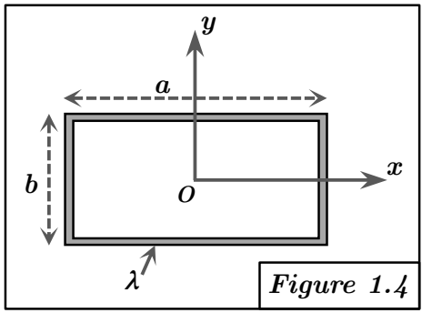

Solution Figure 1.4 : Cadre rectangulaire centré en O

FIGURE 4 - Cadre rectangulaire centré en O
Méthode requise : Calcul direct (par additivité).
Concepts Clés :
- Additivité : Pour un solide composé de plusieurs parties ($S_i$) sans recouvrement de masse, le tenseur d'inertie total $[I_O]$ est la somme des tenseurs d'inertie de chaque partie $[I_O]_i$, calculés au même point O et dans la même base.
$$ [I_O] = \sum_i [I_O]_i $$
- Théorème de Huygens : Utilisé ici pour chaque segment (partie $S_i$) afin de calculer son tenseur $[I_O]_i$ à partir de son tenseur au centre de masse $[I_{G_i}]$ : $[I_O]_i = [I_{G_i}] + [I_{O/G_i}]$.
- Symétrie : Le cadre est centré en O. Les plans $x = 0$ (plan yOz) et $y = 0$ (plan xOz) sont des plans de symétrie matérielle. Puisque les axes OX et OY sont contenus dans ces plans de symétrie respectifs, les produits d'inertie correspondants sont nuls ($D = I_{xy} = 0$, $E = I_{xz} = 0$, $F = I_{yz} = 0$). La matrice d'inertie totale $[I_O]$ est donc diagonale.
Géométrie et Décomposition :
- Cadre formé de 4 segments de tiges homogènes (densité $\lambda$), dimensions $a \times b$.
- Seg 1 (Haut) : Tige horizontale en $y = b/2$, $x \in [-a/2, a/2]$. Longueur $a$. Masse $M_1 = \lambda a$. Centre de masse $G_1 = \begin{pmatrix} 0 \\ b/2 \\ 0 \end{pmatrix}$.
- Seg 2 (Bas) : Tige horizontale en $y = -b/2$, $x \in [-a/2, a/2]$. Longueur $a$. Masse $M_2 = \lambda a$. Centre de masse $G_2 = \begin{pmatrix} 0 \\ -b/2 \\ 0 \end{pmatrix}$. ($M_2 = M_1$).
- Seg 3 (Droite) : Tige verticale en $x = a/2$, $y \in [-b/2, b/2]$. Longueur $b$. Masse $M_3 = \lambda b$. Centre de masse $G_3 = \begin{pmatrix} a/2 \\ 0 \\ 0 \end{pmatrix}$.
- Seg 4 (Gauche) : Tige verticale en $x = -a/2$, $y \in [-b/2, b/2]$. Longueur $b$. Masse $M_4 = \lambda b$. Centre de masse $G_4 = \begin{pmatrix} -a/2 \\ 0 \\ 0 \end{pmatrix}$. ($M_4 = M_3$).
- Masse totale : $M = M_1 + M_2 + M_3 + M_4 = 2M_1 + 2M_3 = 2\lambda a + 2\lambda b = 2\lambda(a+b)$.
Calcul pour chaque segment (via Huygens) :
Segment 1 (Haut) : $G_1 = (0, b/2, 0)$, $M_1 = \lambda a$
- Tenseur en G1 (tige de longueur $a$ parallèle à OX) :
$$ [I_{G1}] = \begin{pmatrix} 0 & 0 & 0 \\ 0 & M_1 a^2 / 12 & 0 \\ 0 & 0 & M_1 a^2 / 12 \end{pmatrix} $$
- Transport O/G1 ($x_G=0, y_G=b/2, z_G=0$) :
$$ [I_{O/G1}] = M_1 \begin{pmatrix} (b/2)^2+0 & 0 & 0 \\ 0 & 0^2+0 & 0 \\ 0 & 0 & 0^2+(b/2)^2 \end{pmatrix} = \begin{pmatrix} M_1 b^2 / 4 & 0 & 0 \\ 0 & 0 & 0 \\ 0 & 0 & M_1 b^2 / 4 \end{pmatrix} $$
- Tenseur en O pour Seg 1 : $[I_O]_1 = [I_{G1}] + [I_{O/G1}]$
$$ [I_O]_1 = \begin{pmatrix} M_1 b^2 / 4 & 0 & 0 \\ 0 & M_1 a^2 / 12 & 0 \\ 0 & 0 & M_1 a^2 / 12 + M_1 b^2 / 4 \end{pmatrix} $$
Segment 2 (Bas) : $G_2 = (0, -b/2, 0)$, $M_2 = M_1$
$[I_{G2}] = [I_{G1}]$. Le terme de transport $[I_{O/G2}]$ est identique à $[I_{O/G1}]$ car $y_G^2 = (-b/2)^2 = (b/2)^2$. Donc :
$$ [I_O]_2 = [I_O]_1 $$
Segment 3 (Droite) : $G_3 = (a/2, 0, 0)$, $M_3 = \lambda b$
- Tenseur en G3 (tige de longueur $b$ parallèle à OY) :
$$ [I_{G3}] = \begin{pmatrix} M_3 b^2 / 12 & 0 & 0 \\ 0 & 0 & 0 \\ 0 & 0 & M_3 b^2 / 12 \end{pmatrix} $$
- Transport O/G3 ($x_G=a/2, y_G=0, z_G=0$) :
$$ [I_{O/G3}] = M_3 \begin{pmatrix} 0^2+0 & 0 & 0 \\ 0 & (a/2)^2+0 & 0 \\ 0 & 0 & (a/2)^2+0 \end{pmatrix} = \begin{pmatrix} 0 & 0 & 0 \\ 0 & M_3 a^2 / 4 & 0 \\ 0 & 0 & M_3 a^2 / 4 \end{pmatrix} $$
- Tenseur en O pour Seg 3 : $[I_O]_3 = [I_{G3}] + [I_{O/G3}]$
$$ [I_O]_3 = \begin{pmatrix} M_3 b^2 / 12 & 0 & 0 \\ 0 & M_3 a^2 / 4 & 0 \\ 0 & 0 & M_3 b^2 / 12 + M_3 a^2 / 4 \end{pmatrix} $$
Segment 4 (Gauche) : $G_4 = (-a/2, 0, 0)$, $M_4 = M_3$
$[I_{G4}] = [I_{G3}]$. Le terme de transport $[I_{O/G4}]$ est identique à $[I_{O/G3}]$ car $x_G^2 = (-a/2)^2 = (a/2)^2$. Donc :
$$ [I_O]_4 = [I_O]_3 $$
Sommation :
En utilisant l'additivité : $[I_O] = [I_O]_1 + [I_O]_2 + [I_O]_3 + [I_O]_4 = 2[I_O]_1 + 2[I_O]_3$.
La matrice résultante $[I_O]$ est diagonale, comme prévu par la symétrie. Calculons ses termes diagonaux A, B, C :
Calcul de A (moment / Ox) :
$$ A = 2A_1 + 2A_3 = 2\left(\frac{M_1 b^2}{4}\right) + 2\left(\frac{M_3 b^2}{12}\right) $$
$$ = 2\left(\frac{(\lambda a) b^2}{4}\right) + 2\left(\frac{(\lambda b) b^2}{12}\right) = \frac{\lambda a b^2}{2} + \frac{\lambda b^3}{6} $$
$$ = \frac{\lambda b^2}{6} (3a + b) $$
Calcul de B (moment / Oy) :
$$ B = 2B_1 + 2B_3 = 2\left(\frac{M_1 a^2}{12}\right) + 2\left(\frac{M_3 a^2}{4}\right) $$
$$ = 2\left(\frac{(\lambda a) a^2}{12}\right) + 2\left(\frac{(\lambda b) a^2}{4}\right) = \frac{\lambda a^3}{6} + \frac{\lambda b a^2}{2} $$
$$ = \frac{\lambda a^2}{6} (a + 3b) $$
Calcul de C (moment / Oz) :
$$ C = 2C_1 + 2C_3 = 2\left(\frac{M_1 a^2}{12} + \frac{M_1 b^2}{4}\right) + 2\left(\frac{M_3 b^2}{12} + \frac{M_3 a^2}{4}\right) $$
$$ = \left(2\frac{M_1 b^2}{4} + 2\frac{M_3 b^2}{12}\right) + \left(2\frac{M_1 a^2}{12} + 2\frac{M_3 a^2}{4}\right) = A + B $$
$$ = \frac{\lambda b^2}{6} (3a + b) + \frac{\lambda a^2}{6} (a + 3b) = \frac{\lambda}{6} (3ab^2 + b^3 + a^3 + 3a^2b) $$
$$ = \frac{\lambda}{6} (a^3 + 3a^2b + 3ab^2 + b^3) = \frac{\lambda}{6} (a+b)^3 $$
(Vérification C = A + B : OK. Théorème de l'axe perpendiculaire vérifié pour le cadre plan)
Résultat :
$$ [I_O]_{1.4} = \begin{pmatrix} A & 0 & 0 \\ 0 & B & 0 \\ 0 & 0 & C \end{pmatrix} = \begin{pmatrix} \frac{\lambda b^2}{6}(3a+b) & 0 & 0 \\ 0 & \frac{\lambda a^2}{6}(a+3b) & 0 \\ 0 & 0 & \frac{\lambda}{6}(a+b)^3 \end{pmatrix} $$
ou, en termes de A et B calculés :
$$ [I_O]_{1.4} = \begin{pmatrix} A & 0 & 0 \\ 0 & B & 0 \\ 0 & 0 & A+B \end{pmatrix} $$